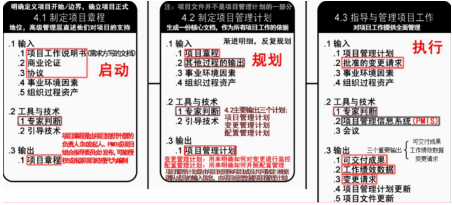
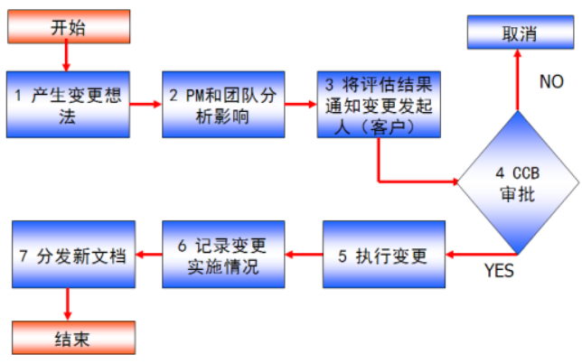

分值：3分
综合图谱

项目章程
- 由**实施组织外部签发，**不是项目经理
- 内容
- 项目目的或批准项目的原因
- 可测量的项目目标和相关的成功标准
- 项目的总体要求
- 概括性的项目描述
- 项目的主要风险
- 总体里程碑进度计划
- 总体预算
- 项目审批要求
- 委派的项目经理及其职责和职权
- 发起人或其他批准项目章程的人员的姓名和职权
- 项目章程的批准，标志着项目的正式启动
- 尽早确认项目经理，项目经理应该参与制定项目章程
工作说明书
- 业务需求
- 产品范围说明书
- 战略计划
事业环境因素
也叫企业环境因素，项目经理不可操控和裁剪的，来自组织外部
- 实施单位的企业文化和组织机构
- 国家标准和行业标准
- 现有的设施和固定资产
- 实施单位现有的人力资源、人员的专业和技能、人力资源政策、员工绩效评估和培训记录
- 当时的市场状况
- 项目干系人对风险的承受力
- 行业数据库
- 项目管理信息系统
组织过程资产
项目经理可以控制和裁剪，来自内部
- 过程和程序
- 组织的标准过程
- 标准指导方针、模板、工作指南
- 标准过程的修正指南
- 组织的沟通要求，汇报制度
- 项目收尾指南和要求
- 财务控制程序
- 问题和缺陷管理程序
- 变更控制程序
- 风险控制程序
- 标准与发布工作授权程序
- 组织的全部知识
- 项目档案
- 过程测量数据库
- 经验学习系统
- 问题和缺陷管理数据库
- 配置管理数据库
- 财务数据库
财务价值评估方法
- 净现值分析
- 投资收益率分析
- ROI=（总的折现收益 - 总的折现成本）/ 折现成本
- 投资回收期分析
项目管理计划内容
- 项目管理团队选择的各个项目管理过程
- 每一选定过程实施水平
- 使用的工具与技术所作的说明
- 选定过程的方式和方法
- 为实现项目目标执行工作的方法、方式
- 监控变更的方式、方法
- 实施配置管理的方式、方法
- 实施效果测量基准的方式、方法
- 项目干系人之间的沟通技巧
- 选定的项目生命期和多阶段项目的项目阶段
- 高层管理人员对内容、范围和时间安排的关键审查
项目收尾
内容：
- 项目验收
- 验收测试
- 系统试运行
- 系统的文档验收
- 系统集成项目介绍
- 系统集成项目最终报告
- 信息系统说明手册
- 信息系统维护手册
- 软硬件产品说明书、质量保证书
- 项目终验
- 项目总结
- 内容
- 项目绩效
- 技术绩效
- 成本绩效
- 进度计划绩效
- 项目的沟通
- 识别问题和解决问题
- 意见和建议
- 意义
- 了解项目全过程的工作情况和相关团队与成员的绩效状况
- 了解出现的问题并进行改进措施总结
- 了解项目全过程中出现的经验教训，进行总结
- 对总结和文档进行讨论，纳入公司知识库，成为企业的过程资产
- 内容
- 系统维护
- 软件bug修改
- 软件升级
- 后续技术支持
- 日常维护和硬件更新
- 新需求
- 项目后评价
- 目标评价
- 过程评价
- 效益评价
- 可持续性评价
变更管理流程
